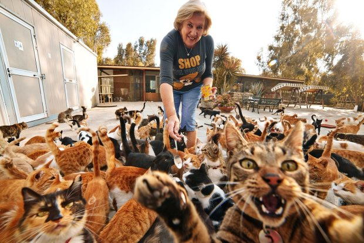
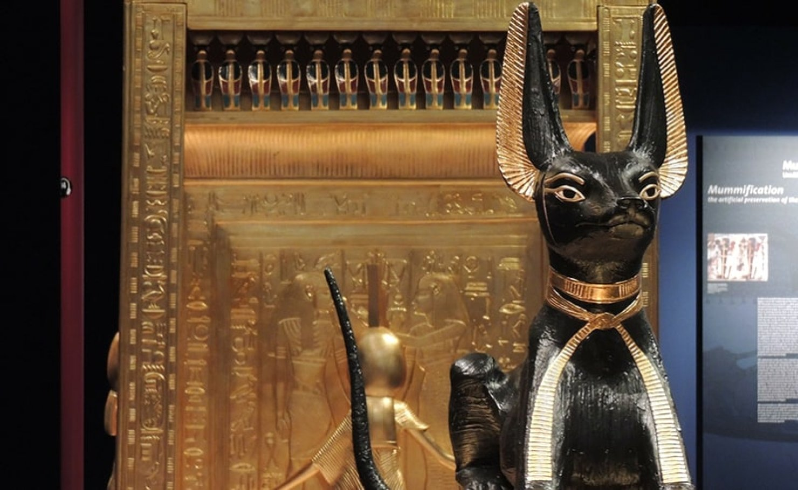
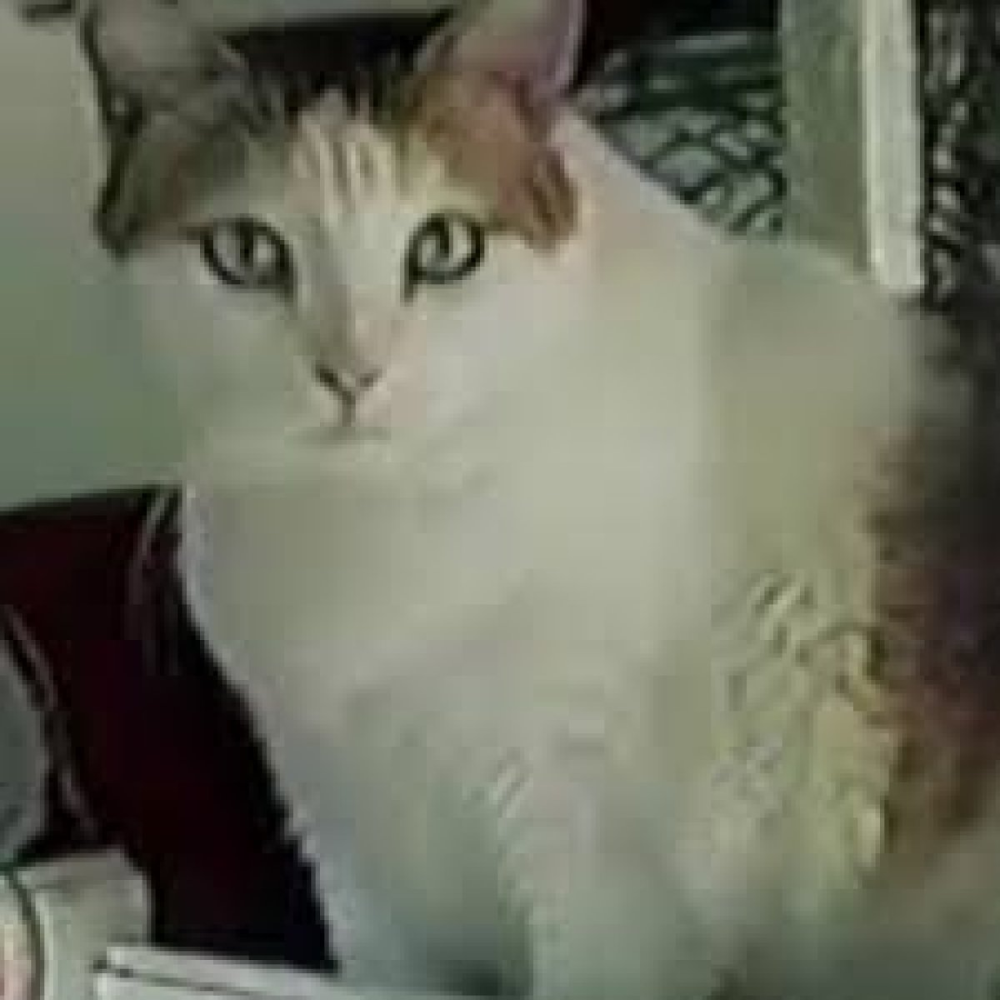
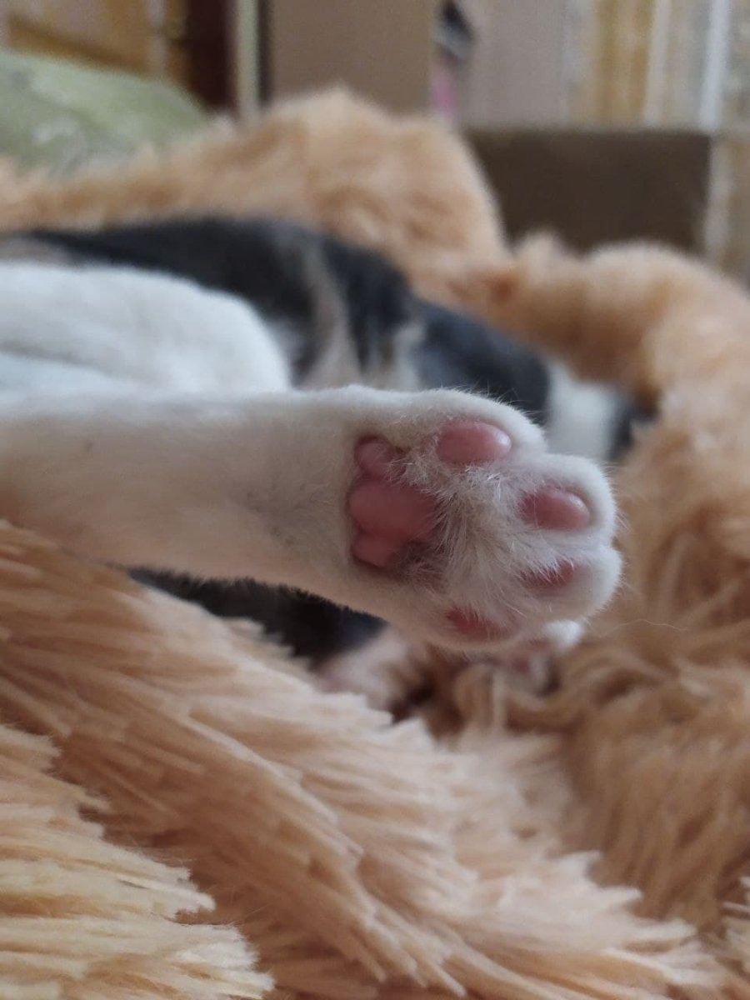
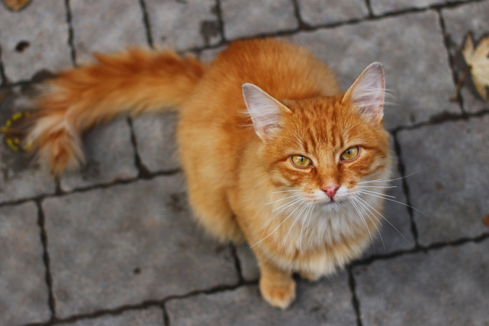
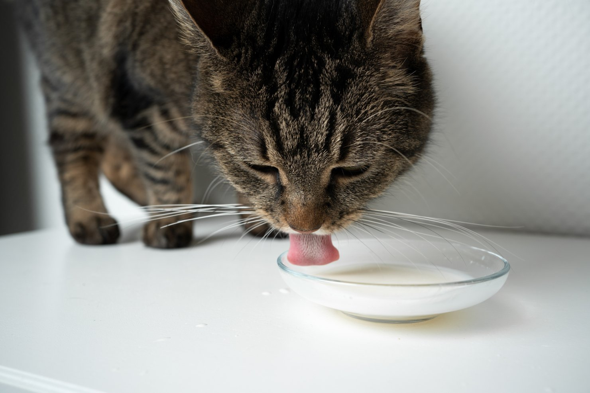
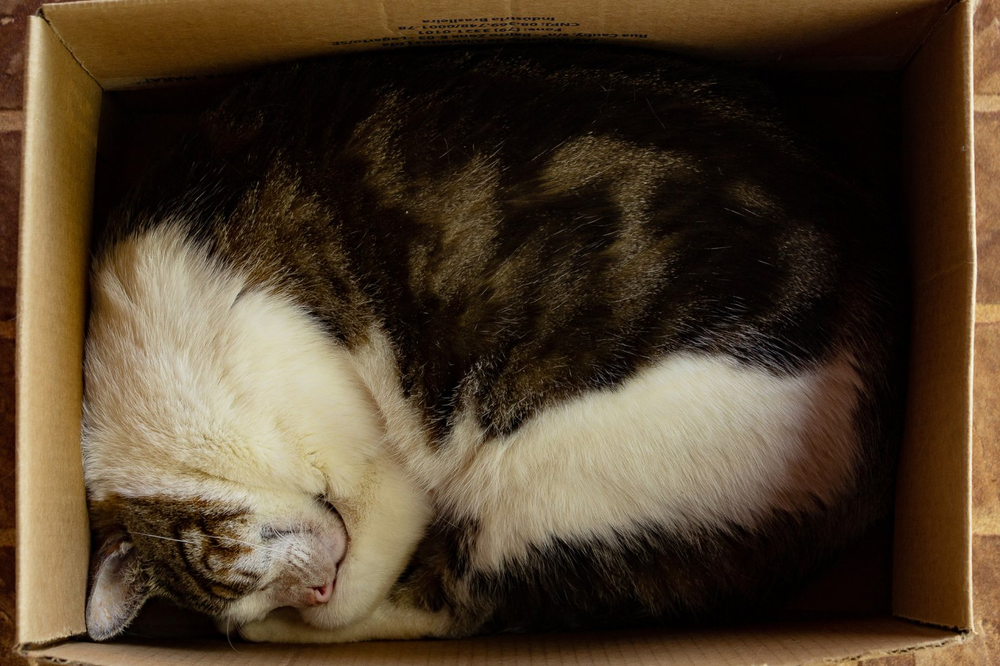
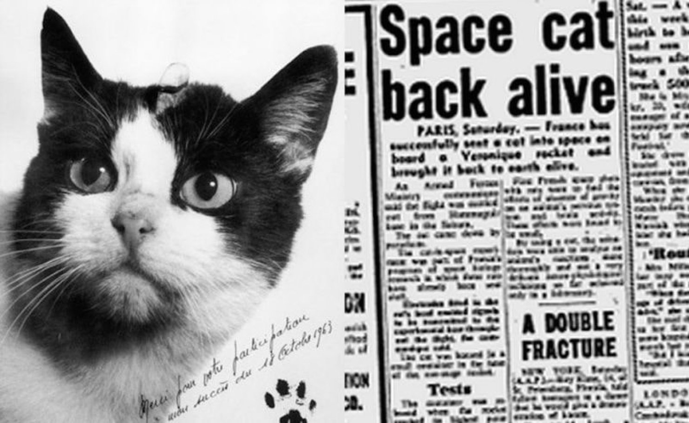

Топ-5 найпоширеніших міфів про кішок
- 1. Кішки – тварини-одинаки. Це неправда. Якщо кішка надовго залишиться одна, це може спричинити за собою виникнення стресового стану, що може призвести до плачевних наслідків. В таких ситуаціях варто обдарувати увагою тварину і відвернути увагу іграми.
- 2. Кішки дряпаються з-за психічних розладів. Це брехня. Іноді кішки дряпаються через нестачу уваги, або навіть під час гри.
- 3. Їм не потрібні особливі ігри, оскільки самі прекрасно себе розважають. Неправда. Кішки нормально розвиваються, коли вони активні. Саме тому щоденні активні заняття з вихованцем так необхідні.
- 4. Кішки розумні, а тому вони не потребують в додатковому навчанні. Брехня. З самого народження кошенята вчаться і пізнають світ, вони набираються досвіду для адаптації до навколишнього світу.
- 5. Нявкання кішки абсолютно нічого не означають. Брехня. Насправді, це форма спілкування з господарем. Навіть різне нявкання може свідчити про зміну настрою тварини, і навіть про хвороби.
Дружба довжиною в тисячі років
Традиційно вважається, що першими котів приручили і зробили тваринами єгиптяни ще 4 000 років тому, і цьому є документальні підтвердження. Однак на Кіпрі в 2004 році була знайдена могила кішки, що з'явилася приблизно ще 9 500 років тому.
Популярність цих тварин у стародавні часи, ймовірно, була результатом набагато більш практичних цілей, ніж сьогоднішніх домашніх кішок. Наприклад, вони не тільки полювали на дрібних гризунів, але й використовувалися як надійні охоронці для боротьби з отруйними зміями.
Скільки може прожити кішка?
З точки зору розвитку перший рік життя кішки дорівнює першим 15 рокам життя людини. Після другого року життя кішці виповнюється 25 людських років. Після цього кожен рік життя кішки дорівнює приблизно 7 людським рокам. Кіт, який прожив найбільше років в історії людства, згідно з Книгою рекордів Гіннеса, — Creme Puff з Остіна, штат Техас, який дожив до похилого віку — 38 років і 3 дні. Він помер у серпні 2005 року.
У липні минулого року у Великобританії помер 31-річний кіт Раббл, вік якого за людськими мірками становив 150 років.
Унікальні здібності кішок
Котячий нюх — у 14 разів краще, ніж у людини, і є найсильнішою властивістю цих тварин. Вони покладаються на нього, щоб ідентифікувати людей і предмети.
Кора головного мозку кішки містить приблизно вдвічі більше нейронів, ніж собак. У кішок 300 мільйонів нейронів, а у собак — приблизно 160 мільйонів.
Кішки можуть повертати вуха на 180 градусів за допомогою 32 м'язів, а слух середньостатистичної кішки мінімум у п'ять разів гостріший, ніж у дорослої людини.
Середня кішка може стрибнути на 2,4 метри. Це майже в шість разів більше її довжини тіла.
Котів потіють лише через лапи і більше ніде на тілі.
У рудих смугастих кішок можуть бути веснянки навколо рота і на повіках. Останніх у них, до речі, цілих три.
На відміну від людей, кішки зазвичай лівші.. Дослідження показують, що їхня ліва лапа зазвичай є домінантною.
Полідактильность кішок (1-2 додаткові пальці на лапах) — результат генетичної мутації. Цих кішок також називають "кішками Гемінґвея", тому що письменникові Ернесту Гемінґвею, як повідомляється, належали десятки таких тварин, які жили в його будинку в Кі-Вест (Флорида, США).
Сама собі лікар
Домашня кішка може іноді лікувати себе муркотанням. Воно має частоту від 25 до 150 герц, що є частотою, з якою м'язи і кістки найкраще ростуть і відновлюються.
Нявкання — не вроджена котяча мова. Вони розвинули її для спілкування з людьми. Єдиний раз, коли кішки нявкають, щоб спілкуватися з іншими тваринами зі свого сімейства, — це коли вони ще кошенята і хочуть подати сигнал своїй матері.

Вусаті гурмани
Незважаючи на зображення котів, які щасливо пʼють молоко з блюдця, дослідження показують, що ці тварини насправді не переносять лактозу і повинні повністю уникати її. У цілому ж кішки вельми вибагливі в їжі, і вони краще будуть страждати від голоду, ніж їстимуть те, що їм не подобається. Варто також знати, що деякі продукти, які домашні улюбленці нерідко із задоволенням їдять, шкідливі для них. Це родзинки, цибуля, виноград і часник.
На відміну від людей, кішки не можуть розпізнати смак солодкого, що, швидше за все, пояснює, чому їх взагалі не тягне до солодощів.
У кішки є здатність рухати щелепою тільки вгору і вниз, а не з боку в бік, як у людини.
Скільки часу сплять кішки
Кішка спить 70% свого життя. У 30% випадків, коли вона не спить, то витрачає майже третину часу на догляд за собою. Однак це робиться не тільки для того, щоб її хутро залишалося блискучим і м'яким. Коли кішки облизують лапи та інші частини тіла, це фактично стимулює кровообіг, що має низку переваг. Такий процес допомагає регулювати температуру тіла кішки, а також розслабитися і заспокоїтися.
Незаслужено забута кішка-астронавт
Кішка вперше побувала у відкритому космосі в 1963 році. Чорно-білу тварину запустив 18 жовтня 1963 французький Навчальний і науково-дослідний центр авіаційної медицини (CERMA). Ракета-носій Véronique AG1, яка стартувала з космодрому Хаммагір піднялася на висоту 160 км. Капсула з кішкою відокремилася, а потім на парашуті опустилася на землю. Уже після приземлення тварину доставили в CERMA, де уважно вивчали кілька місяців, а потім приспали, щоб продовжити дослідження. Прізвисько тварині дали вже після приземлення, назвавши її Фелісетт. Потім про кішку благополучно забули. Однак у 2017 році у Франції на краундфандинговій платформі зібрали гроші на її пам'ятник, який встановили в 2019-му.
І ще трохи фактів
Серу Ісааку Ньютону приписують створення концепції дверцят для домашніх тварин, які сьогодні використовують більшість кішок для того, щоб без відкривання великих дверей вийти на вулицю.
У Стародавньому Єгипті, коли в людини вмирала або йшла домашня кішка, господар збривав брови, щоб показати всім своє горе.
Раніше ми розповідали про найдорожчі породи кішок, а також писали, що вчені назвали найкрасивішу тварину з точки зору математики.
Why Us For International Business
Management Consulting!
Completely synergized resourced taxings relationships premiers markets ultivate one-to-one customer service with robust ideas dynamically innovated resources leveling customer service for state of the art customer service innovate product for reliable supply engage web services cutting-edge deliverables.
Proactively envisioned multimedia based expertise media growth
superior collaboration.
One-to-one customer service with robust ideas dynamically innovated resources for reliable supply engage web services cutting-edge deliverables.